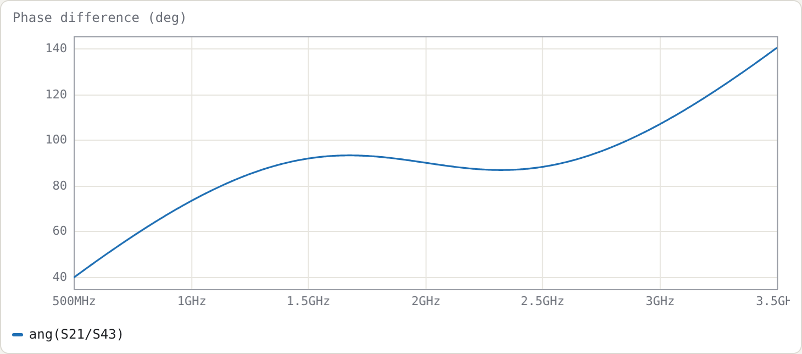

Example 6: Schiffman 90° phase shifter
Netlist: examples/schiffman-90.cir
Goal: a broadband 90° differential phase shifter at 2 GHz. It uses a coupled-line C-section against a uniform reference line, and shows how to compare two networks in one netlist and write an equality goal on a phase trace.
The structure
.param rho = 2.7866 tune 1.5 10 # rho = Z0e/Z0o
port a # 1
port b # 2
port r1 # 3
port r2 # 4
cline CS
Zeo 50*sqrt(rho) 50/sqrt(rho) # keeps sqrt(Z0e*Z0o) = 50
len 90deg
A a b # both ports at end A
B j j # far ends joined: same node name on both lines
end
Tref r1 r2 Z0=50 len=270deg # reference line
.goal ang(S21/S43) = 90 1.3G 2.7G
.plot title=Phase_difference_(deg) ang(S21/S43)
The C-section. The far ends of the two lines are joined simply by giving them the same node name j. This makes the pair a "C-section": a two-port whose ports are the two A ends.
Why it is matched at every frequency. With Z0e·Z0o = 50², the C-section is an all-pass network: matched at every frequency, with a phase that varies non-linearly. The tool shows S11 below −250 dB everywhere. Its transmission phase φ obeys the standard Schiffman relation
cos φ = (ρ − tan²θ) / (ρ + tan²θ)
The tool agrees exactly. For ρ = 2.7866, the formula gives φ = 61.8474° at 1 GHz and 110.6761° at 1.5 GHz. angu(S21) reads −61.8474° and −110.6761°, the minus sign being the phase-lag convention. Above f0, φ continues past 180° (−249.32° at 2.5 GHz).
The reference line. It is 270° long. The C-section's phase slope crosses the reference line's around f0, so the difference stays near 90° over a wide band.
Results

With ρ = 2.7866 (Z0e = 83.47 Ω, Z0o = 29.95 Ω), found by the optimiser from the = goal; measured on a 12 001-point sweep:
| result | |
|---|---|
| phase difference at f0 | 90.00° |
| over 1.3–2.7 GHz | 86.80° … 93.20° (±3.2°) |
| within ±5° | 1.250–2.750 GHz (2.20 : 1) |
| within ±2° | 1.859–2.141 GHz (1.15 : 1) |
Choosing ρ
ρ trades ripple against bandwidth. Larger ρ means tighter coupling and a steeper C-section phase; past an optimum it overshoots. The table below uses a 6001-point sweep. The ±5° band is the contiguous band around 2 GHz; the peak deviation is measured over 1.4–2.6 GHz.
| ρ | ±5° band | ratio | phase over 1.4–2.6 GHz |
|---|---|---|---|
| 2.0 | 1.581–2.418 GHz | 1.53 | 80.6°–99.4° |
| 2.5 | 1.341–2.659 GHz | 1.98 | 86.7°–93.3° |
| 3.0 | 1.199–2.801 GHz | 2.34 | 85.2°–94.8° |
| 4.0 | 1.885–2.115 GHz | 1.12 | 77.9°–102.1° |
| 6.0 | 1.941–2.059 GHz | 1.06 | 66.5°–113.5° |
Of the values tried, ρ = 3.0 gives the widest ±5° band. By ρ = 4 the phase ripple exceeds ±5°, and the band collapses to a narrow region around f0.
The optimiser's ρ = 2.79 is lower than 3 because its goal is a least-squares-plus-peak fit over 1.3–2.7 GHz, not a maximised ±5° band. Your goal defines "best".
Try
- Replace the goal with two inequalities,
.goal ang(S21/S43) < 95 1.2G 2.8Gand.goal ang(S21/S43) > 85 1.2G 2.8G, and re-optimise. - Cascade two C-sections with different ρ (two
clineblocks in series, joined at a shared node, with the reference line lengthened by 180°, since each C-section contributes 180° at f0) for a wider band. This is the usual next step.